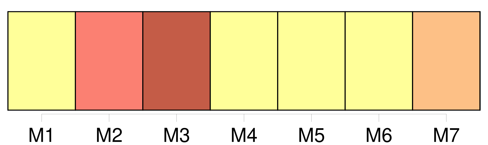
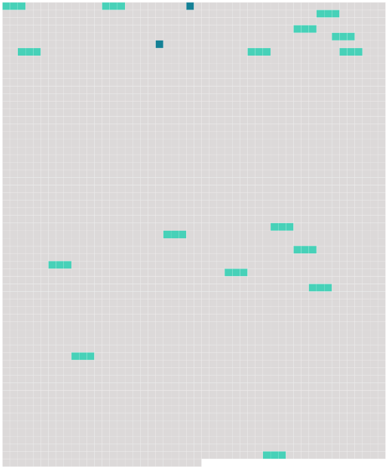

Longueur nb maillons : 18 mentions |
  |
[Du subrogé tuteur] [1 phrases] Dans toute tutelle il y aura [un subrogé tuteur] , nommé par le conseil de famille.
[Ses] fonctions consisteront à agir pour les intérêts du mineur, lorsqu'ils seront en opposition avec ceux du tuteur. [1 phrases]
Lorsque les fonctions du tuteur seront dévolues à une personne de l'une des qualités exprimées aux sections I, II et III du présent chapitre, ce tuteur devra, avant d'entrer en fonctions, faire convoquer, pour la nomination [du subrogé tuteur] un conseil de famille composé comme il est dit en la section IV. [2 phrases]
Dans les autres tutelles, la nomination [du subrogé tuteur] aura lieu immédiatement après celle du tuteur. [3 phrases]
[Le subrogé tuteur] ne remplacera pas de plein droit le tuteur, lorsque la tutelle deviendra vacante, ou qu'elle sera abandonnée par absence ; mais [il] devra, en ce cas, sous peine des dommages-intérêts qui pourraient en résulter pour le mineur, provoquer la nomination d'un nouveau tuteur. [1 phrases]
Les fonctions [du subrogé tuteur] cesseront à la même époque que la tutelle. [1 phrases]
Les dispositions contenues dans les sections VI et VII du présent chapitre, s'appliqueront [aux subrogés tuteurs]
Néanmoins le tuteur ne pourra provoquer la destitution [du subrogé tuteur] , ni voter dans les conseils de famille qui seront convoqués pour cet objet. [64 phrases]
S'il y a réclamation, [le subrogé tuteur] poursuivra l'homologation de la délibération devant le tribunal de première instance, qui prononcera sauf l'appel.
Le tuteur exclu ou destitué peut lui -même, en ce cas, assigner [le subrogé tuteur] pour se faire déclarer maintenu en la tutelle. [7 phrases]
Il ne peut ni acheter les biens du mineur, ni les prendre à ferme à moins que le conseil de famille n'ait autorisé [le subrogé tuteur] à lui en passer bail ni accepter la cession d'aucun droit ou créance contre son pupille. [1 phrases]
Dans les dix jours qui suivront celui de sa nomination, dûment connue de lui, le tuteur requerra la levée des scellés, s'ils ont été apposés, et fera procéder immédiatement à l'inventaire des biens du mineur, en présence [du subrogé tuteur] [2 phrases]
Dans le mois qui suivra la clôture de l'inventaire, le tuteur fera vendre, en présence [du subrogé tuteur] , aux enchères reçues par un officier public et après des affiches ou publications dont le procès-verbal de vente fera mention, tous les meubles autres que ceux que le conseil de famille l'aurait autorisé à conserver en nature. [2 phrases] Dans ce cas, ils en feront faire, à leurs frais, une estimation à juste valeur, par un expert qui sera nommé par [le subrogé tuteur] et prêtera serment devant le juge de paix. [16 phrases]
La vente se fera publiquement, en présence [du subrogé tuteur] , aux enchères qui seront reçues par un membre du tribunal civil, ou par un notaire à ce commis, et à la suite de trois affiches apposées, par trois dimanches consécutifs, aux lieux accoutumés dans le canton. [30 phrases]
Tout tuteur, autre que le père et la mère, peut être tenu, même durant la tutelle, de remettre [au subrogé tuteur] des états de situation de sa gestion, aux époques que le conseil de famille aurait jugé à propos de fixer, sans néanmoins que le tuteur puisse être astreint à en fournir plus d'un chaque année. |
 |
La ressource peut être téléchargée sur la page Ortolang
Si vous avez des questions ou vous voyez des erreurs, merci d'envoyer un mail à silvia.federzoni89@gmail.com
Site développé par S. Federzoni (contact)